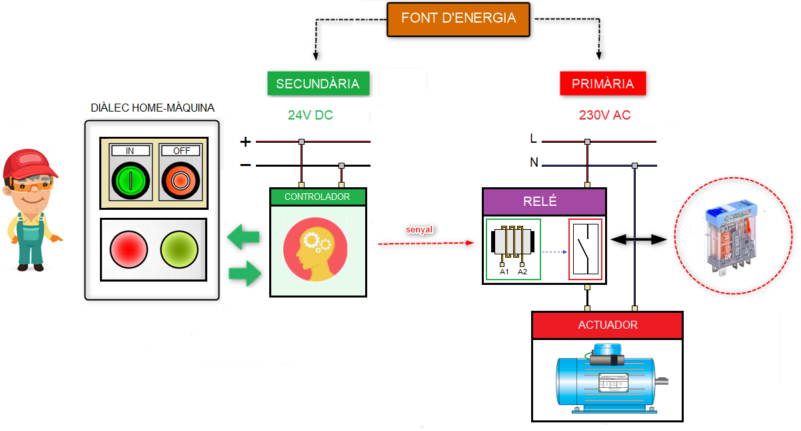
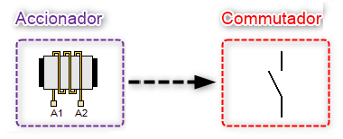

El relé industrial és un preactuador, es a dir, és l'element que fa d'interfície entre el controlador (24V DC) i xicotets actuadors monofàsics (230V).
El relé és un preactuador que no pot regular la quantitat d'energia que rep l'actuador, únicament té capacitat de commutació:
- Ordre IN ("Amb Tensió"): Realitza la connexió de l'actuador (motor elèctric) a la xarxa elèctrica.
- Ordre OFF ("Sense Tensió): Realitza la desconnexió de l'actuador (motor elèctric) de la xarxa elèctrica.
Podem definir al relé industrial de la següent manera:
Un relé es un commutador amb comandament electromagnètic (accionat per un electroimant) i amb una única posició estable. En activar la bobina de l'electroimant , un o mes contactes canvien de posició, i al desactivar-la, una molla interna fa que el contacte o contactes retornen a la seva posició inicial.
